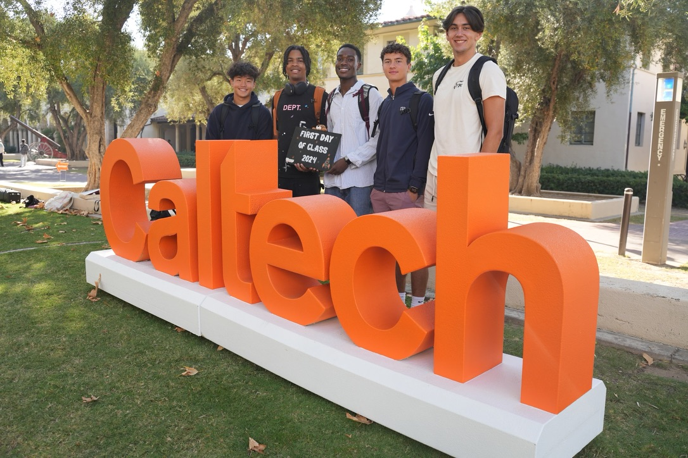
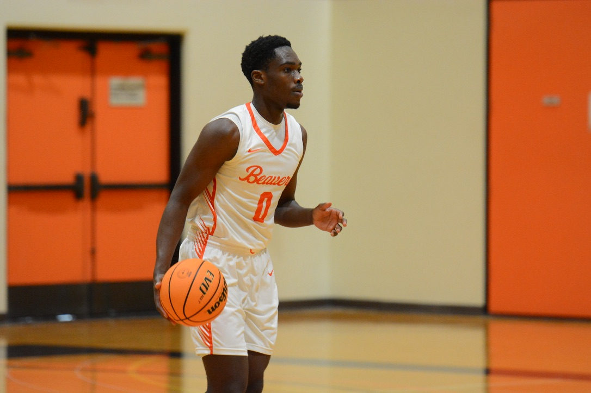
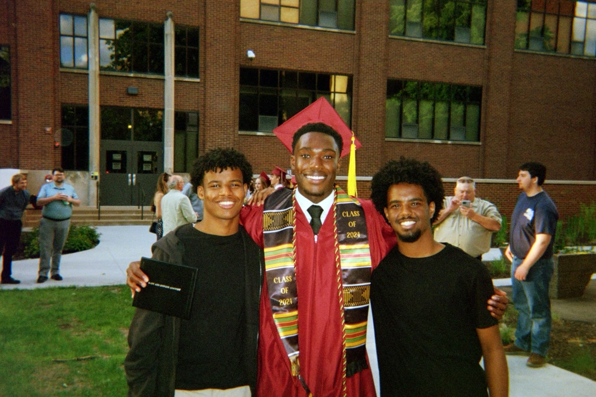
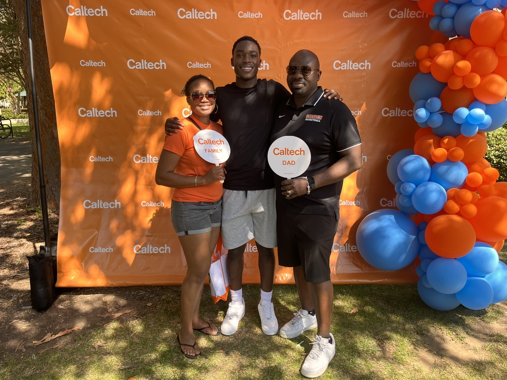

01
Rockwell Automation · Cloud Engineering
Terraform Drift Detection
Automated infrastructure drift detection and turned discrepancies between infrastructure-as-code and deployed Azure resources into actionable engineering workflows.
CS + BEM @ Caltech
I’m Salviya Balami, a software engineer working across cloud infrastructure, AI systems, and robotics.

01 / Selected work
Focused on useful systems, not project count.
01
Rockwell Automation · Cloud Engineering
Automated infrastructure drift detection and turned discrepancies between infrastructure-as-code and deployed Azure resources into actionable engineering workflows.
02
University of Minnesota · RPM Lab
Developed and integrated a real-time teleoperation system for a scaled Boston Dynamics SPOT robotic arm, connecting software, ROS, CAD, and embedded hardware for manipulation research.
03
Rockwell Automation · AI Innovation
Explored multi-agent architectures for retrieving and analyzing engineering designs and technical documentation, translating technical tradeoffs into stakeholder-facing MVP demonstrations.
More code, experiments, and course projects live on GitHub.
Explore repositories ↗02 / Experience
Cloud Engineering Intern
Built cloud-governance automation and contributed to an AI innovation team exploring multi-agent systems for engineering workflows.
NSF Robotics Researcher
Worked on teleoperation and imitation-learning infrastructure for robotic manipulation using a scaled SPOT arm.
Computer Science + BEM
Studying computer science and business, economics, and management while competing on the Caltech Men’s Basketball team.
03 / Beyond the code




I like problems that force me to move between software and the systems around it.
That has taken me from cloud infrastructure and agentic workflows to robotics research and embedded hardware. Outside of engineering, basketball has been a constant part of how I work: competitive, collaborative, and always iterative.
04 / Contact
I’m always interested in ambitious engineering problems, new ideas, and good conversations.